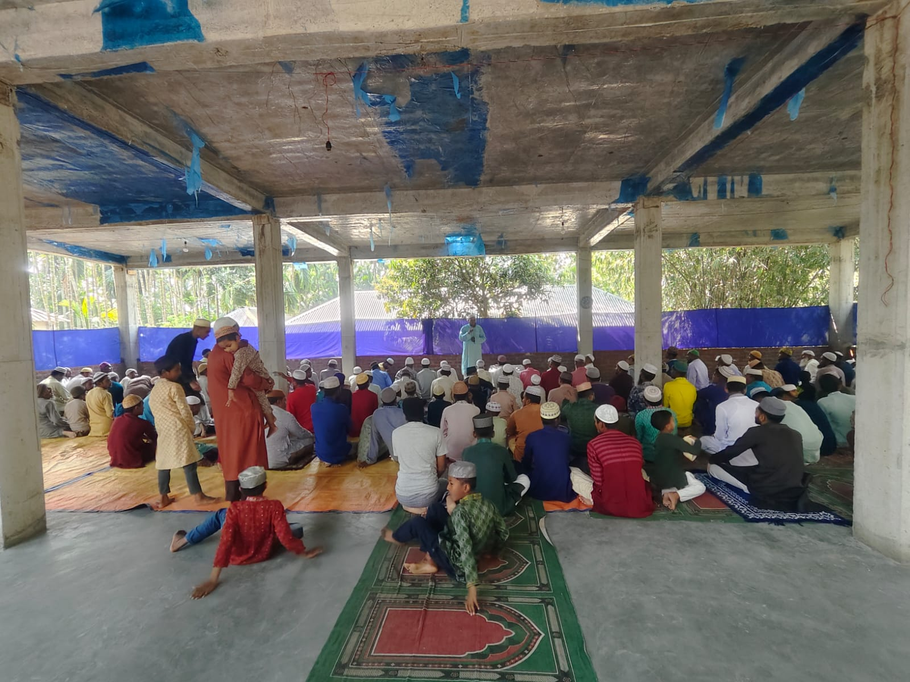

🕌 কালারামজোত জামে মসজিদ
আমাদের গ্রামের গর্ব ও ভালোবাসার প্রতীক কালারামজোত জামে মসজিদ।
রংপুর বিভাগের পঞ্চগড় জেলার তেঁতুলিয়া উপজেলার একটি সুন্দর ও শান্ত গ্রাম কালারামজোত।
আমাদের গ্রামের ইতিহাস, সংস্কৃতি, কৃষি, শিক্ষা, মসজিদ, খেলাধুলা ও প্রাকৃতিক সৌন্দর্য সম্পর্কে জানুন।

আমাদের গ্রামের গর্ব ও ভালোবাসার প্রতীক কালারামজোত জামে মসজিদ।
আমাদের গ্রামের মসজিদটি একসময় ছিল একটি ছোট্ট মসজিদ। সময়ের সঙ্গে সঙ্গে গ্রামের মানুষের প্রয়োজন ও স্বপ্ন বড় হতে থাকে। সেই স্বপ্নকে বাস্তবে রূপ দিতে গ্রামের মানুষ, বিশেষ করে আমাদের তরুণ প্রজন্ম, অনেক পরিশ্রম ও আন্তরিকতার সঙ্গে কাজ করেছে।
সবার সম্মিলিত প্রচেষ্টা, শ্রম ও সহযোগিতার মাধ্যমে ছোট্ট সেই মসজিদটি আজ একটি বড় ও সুন্দর মসজিদে পরিণত হয়েছে। এটি শুধু একটি ইবাদতের স্থান নয়; এটি আমাদের গ্রামের মানুষের ঐক্য, পরিশ্রম ও ভালোবাসার একটি প্রতীক।
আমাদের ইউনিয়নের অন্যতম বড় মসজিদ হিসেবে এটি আজ আমাদের গ্রামের গর্ব। এই মসজিদ নির্মাণের পেছনে গ্রামের মানুষের দীর্ঘদিনের পরিশ্রম, সহযোগিতা এবং তরুণ প্রজন্মের গুরুত্বপূর্ণ ভূমিকা রয়েছে।
আমরা বিশ্বাস করি, গ্রামের মানুষ যখন একসঙ্গে কোনো ভালো কাজের জন্য এগিয়ে আসে, তখন বড় স্বপ্নও বাস্তবে পরিণত করা সম্ভব। আমাদের এই মসজিদ তারই একটি সুন্দর উদাহরণ।
গ্রামের নাম: কালারামজোত
অবস্থান: তেঁতুলিয়া উপজেলা, পঞ্চগড় জেলা, রংপুর বিভাগ, বাংলাদেশ।
জনসংখ্যা: প্রায় ৩০০ জন
পরিবার: প্রায় ১০৫টি
আয়তন: ১২০,০০০ বর্গমিটার
শিক্ষার হার: প্রায় ৯০%
আগে এই গ্রামে হিন্দু সম্প্রদায়ের মানুষ বসবাস করতেন। পরবর্তীতে তারা চলে গেলে একটি মুসলিম পরিবার এখানে বসতি স্থাপন করে। সেই পরিবার থেকেই ধীরে ধীরে কালারামজোত গ্রামের গঠন ও সম্প্রসারণ হয়।
কালারামজোত গ্রামের প্রধান পেশা কৃষিকাজ। এখানকার জমিতে ধান, গম, মরিচ, পাট ও ভুট্টা চাষ করা হয়। কৃষি গ্রামের মানুষের জীবিকার একটি গুরুত্বপূর্ণ উৎস।
গ্রামের শিক্ষার্থীরা বিভিন্ন বিদ্যালয়, কলেজ ও বিশ্ববিদ্যালয়ে অধ্যয়ন করে। গ্রামের প্রধান শিক্ষাপ্রতিষ্ঠান হলো বুড়িমুটকি সরকারি প্রাথমিক বিদ্যালয়।
গ্রামের অনেক মানুষ শিক্ষকতা, সেনাবাহিনী, পুলিশ,এসআই, এসপি ,ডাক্তার ,নার্সসহ বিভিন্ন সরকারি ও বেসরকারি পেশায় কর্মরত আছেন।
শিক্ষার হারের দিক থেকে আমাদের গ্রাম অনেকটাই এগিয়ে রয়েছে। বর্তমানে আমাদের গ্রামের শিক্ষার হার প্রায় ৯০%।
আমাদের গ্রামের শিক্ষার্থীরা দেশের বিভিন্ন বিশ্ববিদ্যালয়, বেসরকারি বিশ্ববিদ্যালয় ও মেডিকেল কলেজসহ উচ্চশিক্ষার বিভিন্ন প্রতিষ্ঠানে পড়াশোনা করছে। গ্রামের অনেক তরুণ-তরুণী উচ্চশিক্ষা গ্রহণ করে নিজেদের ভবিষ্যৎ গড়ে তুলছে এবং বিভিন্ন পেশায় প্রতিষ্ঠিত হচ্ছে।
শিক্ষার প্রতি গ্রামের মানুষের আগ্রহ ও সচেতনতা দিন দিন বৃদ্ধি পাচ্ছে। নতুন প্রজন্মকে শিক্ষিত করে গড়ে তোলার জন্য পরিবার ও সমাজের মানুষ আন্তরিকভাবে সহযোগিতা করে যাচ্ছে।
প্রায় ৯০% শিক্ষার হার আমাদের গ্রামের শিক্ষা ও সচেতনতার অগ্রগতির একটি গুরুত্বপূর্ণ পরিচয়। আমরা আশা করি, ভবিষ্যতে আমাদের গ্রামের আরও বেশি মানুষ উচ্চশিক্ষা গ্রহণ করবে এবং দেশের উন্নয়নে গুরুত্বপূর্ণ ভূমিকা রাখবে।
গ্রামের মাঠে বিভিন্ন সময় খেলাধুলার আয়োজন করা হয়।
প্রতি বছর দুই ঈদ উপলক্ষে গ্রামের মাঠে বিভিন্ন ধরনের খেলাধুলার আয়োজন করা হয়। বিবাহিত ও অবিবাহিতদের মধ্যে আলাদাভাবে খেলাধুলার আয়োজনও করা হয়।
কালারামজোত একটি প্রাকৃতিক সৌন্দর্যে ভরপুর গ্রাম। গ্রামের কাছেই মহানন্দা নদী রয়েছে।
শীতকালে পরিষ্কার আবহাওয়ায় গ্রামের মোড় থেকে ভারতের কাঞ্চনজঙ্ঘা পর্বত স্পষ্ট দেখা যায়।
চারপাশের সবুজ মাঠ, কৃষিজমি ও শান্ত পরিবেশ গ্রামের প্রাকৃতিক সৌন্দর্য আরও বাড়িয়ে তুলেছে।
কালীতলা নামের স্থানটি নিয়ে গ্রামের মানুষের মধ্যে একটি প্রচলিত লোককথা রয়েছে। এই স্থানকে ঘিরে বিভিন্ন রহস্যময় গল্প মানুষের মুখে প্রচলিত।
গ্রামের প্রচলিত কথায় "কাটামাকর" নামে একটি ভূতের গল্পের উল্লেখ পাওয়া যায়। এছাড়াও অনেকে জিন-পরীর গল্প বলে থাকেন। এগুলো গ্রামের লোকমুখে প্রচলিত লোককথা ও লোকবিশ্বাস।
গ্রামের নাম: Kalaramjot (কালারামজোত)
উপজেলা: তেঁতুলিয়া
জেলা: পঞ্চগড়
বিভাগ: রংপুর
দেশ: বাংলাদেশ
🏡 কালারামজোত গ্রামের অবস্থান দেখুন
🛣️ কাজী নজরুল চত্বর (বাইপাস মোড়)
কালারামজোত গ্রামের নতুন তথ্য, ছবি, ভিডিও ও গুরুত্বপূর্ণ আপডেট পেতে আমাদের ওয়েবসাইট Follow করুন।
এই ওয়েবসাইটটি তৈরি করেছেন MD Alif। কালারামজোত গ্রামের ইতিহাস, সংস্কৃতি, প্রকৃতি ও মানুষের জীবন তুলে ধরাই এই ওয়েবসাইটের উদ্দেশ্য।
📷 Instagram: MD Alif Instagram
📘 Facebook: MD Alif Facebook